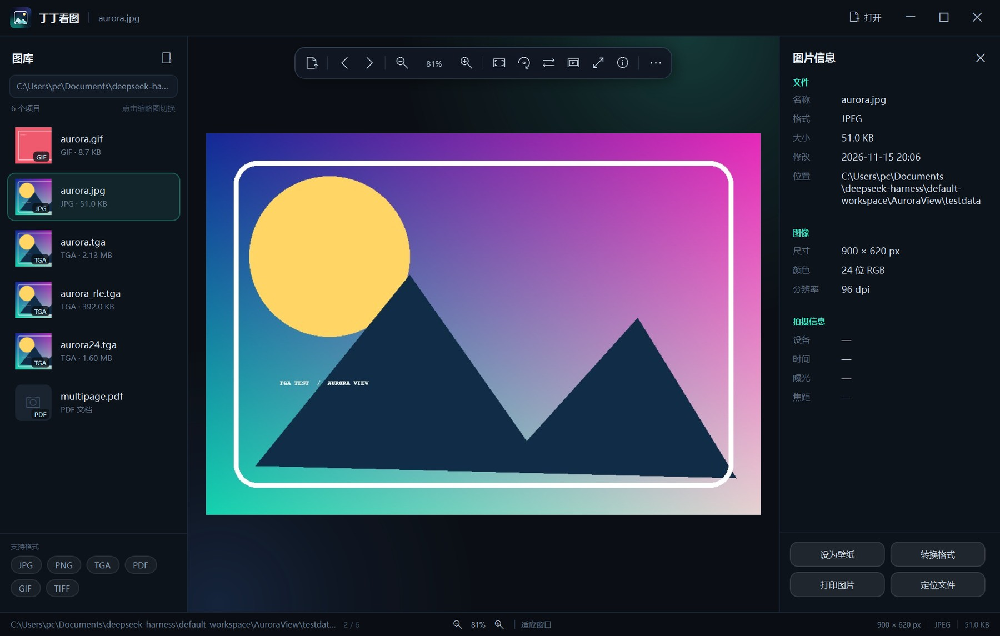
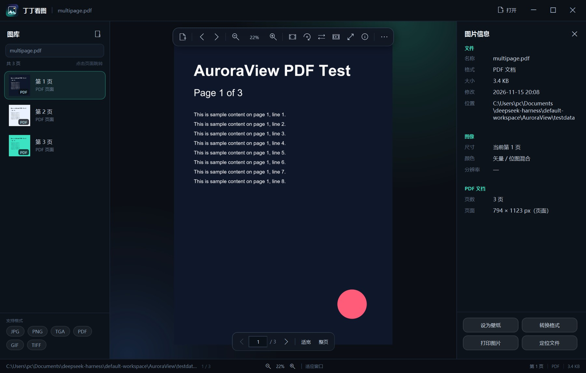
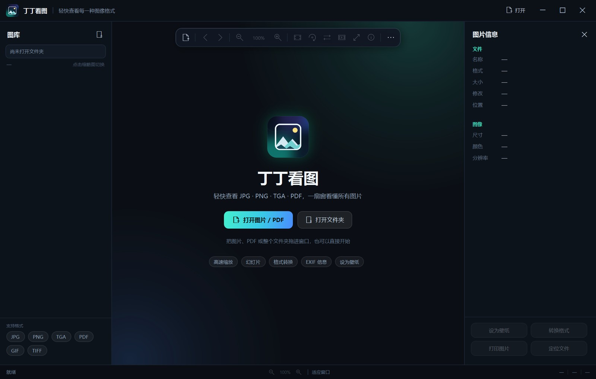

01 / FORMATS↗
多格式，直接打开
JPG、PNG、BMP、GIF、TIFF、ICO、TGA、WebP 与 PDF，一个窗口就能查看。
一款为 Windows 而做的看图工具。图片、TGA 与 PDF 放在同一扇窗里， 打开即看，不弹广告，也不上传你的文件。

01 / 功能
没有复杂的设置，也没有需要学习的新概念。常用的功能都在顺手的位置。
JPG、PNG、BMP、GIF、TIFF、ICO、TGA、WebP 与 PDF，一个窗口就能查看。
多页浏览、页面缩略图、页码跳转、适宽与整页显示，还可以导出为 PNG。
滚轮以鼠标位置缩放；左键框选局部放大；中键拖动平移，中键单击全屏。
一次选择多张图片，输出 PNG、JPEG、BMP、TIFF 或 TGA，并支持尺寸限制。
尺寸、格式、文件大小、DPI，以及相机型号、拍摄时间、曝光和焦距。
不弹窗、不采集、不上传。所有图片都只在本机打开与处理。


ONE WINDOW / TWO WORLDS
做设计的时候，经常需要同时翻看图片、TGA 贴图和 PDF 文档。 与其在几个软件之间来回切换，不如让它们待在一个地方。
认真做的小工具，
也应该好用。 牧之安 / SIDE PROJECT 001
Windows 10 / 11 · x64。选择安装版或免安装版，文件都很小。
自动安装到当前用户目录，创建桌面与开始菜单快捷方式，并注册图片和 PDF 的“打开方式”。
下载安装包解压后直接运行，不写系统设置，适合放在 U 盘或临时使用。
下载便携版Windows 10 版本 1809 或更高 / Windows 11；x64 处理器；需要系统自带的 .NET Framework 4.8；约 20 MB 可用空间。 查看使用说明 ↗